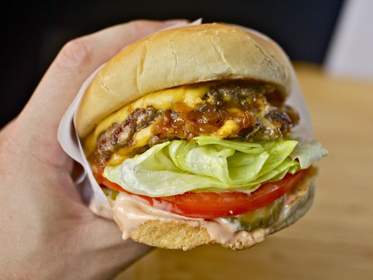

What is Animal Style Burger?
An Animal Style burger includes extra Thousand Island spread, mustard grilled patties, and extra pickles. - For thousand island dressing, in my opinion, won't be a complicated, fancy one, it'll be simplified one.
Recipe
- Recipe From SeriousEats
Ingredients
• 1/2 pound fresh beef chuck with plenty of fat, cut into 1-inch cubes
• 2 teaspoons vegetable oil, divided
• 1 large onion, finely chopped (about 1 1/2 cups)
Kosher salt
• 2 tablespoons plus 2 teaspoons mayonnaise
• 1 tablespoon ketchup
• 2 teaspoons sweet pickle relish
• 1/2 teaspoon sugar
• 1/2 teaspoon distilled white vinegar
• 2 soft Hamburger buns, preferably Arnold brand
Freshly ground black pepper
• 8 dill pickles chips
• 2 quarter-inch-thick slices ripe tomato
• 2 leaves fresh iceberg lettuce, white core section removed, torn to bun-sized pieces
• 1/4 cup yellow mustard
• 4 slices deli-cut American Cheese
Process
1.) If using a meat grinder: Place feed shaft, blade, and 1/4-inch die of meat grinder in freezer until well-chilled. Meanwhile, place meat chunks on rimmed baking sheet, leaving space between each piece and place in freezer for 10 minutes until meat is firm.
2.) Combine meat in large bowl and toss to combine. Grind meat and refrigerate immediately until ready for use. Handle as gently as possible. Proceed with step three below.
3.) If using a food processor: Place bowl and blade of food processor in freezer until well-chilled. Meanwhile, place meat chunks on rimmed baking sheet, leaving space between each piece, and place in freezer for 10 minutes until meat is firm, but not frozen.
4.) Combine meat in large bowl and toss to combine. Working in two batches, place meat cubes in food processor and pulse until medium-fine grind is achieved, about 8 to 10 one-second pulses, scraping down processor bowl as necessary. Refrigerate ground meat immediately until ready for use. Handle as gently as possible.
5.) Preheat the oven or toaster oven to 400 degrees while you cook the onions: Heat 1 teaspoon oil in a 10-inch non-stick skillet over medium-high heat until shimmering. Add onions and 1/2 teaspoon salt to skillet. Reduce heat to medium low, and cook, tossing and stirring occasionally until onions are well browned, about 15 minutes. Once onions begin to sizzle heavily and appear dry, add 1 tablespoon water to skillet and stir. Continue cooking until water evaporates and onions start sizzling again. Repeat process, adding 1 tablespoon of water with each iteration until onions are meltingly soft and dark brown, about 3 times total. Transfer to a small bowl and set aside.
6.) Make the sauce: Combine mayonnaise, ketchup, relish, sugar, and vinegar in small bowl. Stir to combine.
7.) Place closed buns in preheated oven for 2 minutes until slightly darkened and crisped. Heat 1/2 teaspoon oil in 12-inch non-stick skillet or griddle over medium-high heat until shimmering. Open buns and add face-down to skillet. Toast until dark brown around the edges, about 1 minute total.
8.) Form ground beef into four 2-ounce patties, using damp hands to press each into a patty about 3/16ths of an inch thick and 4 inches wide. Season generously with salt and pepper. Add remaining 1/2 teaspoon oil to pan, swirl to coat, and heat over medium-high heat until lightly smoking. Add burger patties and cook without moving until well browned and crusty on first side, about 2 1/2 minutes. While they are cooking, spread 1 tablespoon mustard on raw side of each patty with a spoon. Meanwhile, top each bottom bun with up half of spread, 4 slices pickles, 1 slice tomato, and lettuce. Flip patties with a thin spatula so mustard side is down and continue to cook for 1 minute. Top each patty with a slice of cheese. Divide onion mixture evenly between two patties. Place the other two patties directly on top of the onions , sandwiching them between the beef. Transfer patty stacks to bottom bun. Top with top bun, and serve immediately.
Disclaimer: Nutrition Facts are estimated through MyFitnessPal and should act as a general guideline. It does not represent any actual facts.